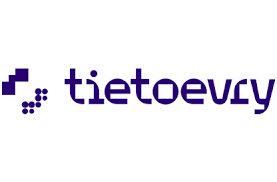

2018 - 2022
Developed and maintained backend systems and APIs for various applications, ensuring high performance, scalability, and reliability. Collaborated with cross-functional teams to design and implement robust solutions, focusing on optimizing database queries, enhancing system security, and improving overall application efficiency. Utilized tools and technologies such as Java, Python, SQL,
and cloud platforms to automate processes, streamline workflows, and support continuous integration and delivery.

Assisted in lectures and conducted review sessions to reinforce Java programming concepts and support student learning.
Held office hours and provided one-on-one tutoring to help students debug code and understand complex topics.
Graded assignments, labs, and exams, offering constructive feedback to enhance student coding skills and knowledge.
Developed and updated course materials, including coding assignments and projects, to align with the latest Java programming trends.
Facilitated lab sessions, guiding students in practical application of Java, and assisted in setting up development environments and tools.
Managed a team of five professionals at a prominent North American retail corporation oversaw the development of ESB middleware operating IBM ACE and MQ, and
•Incorporated Docker for efficient data interaction among diverse vendor applications and performed an impressive 40% deduction in operational costs.
•Streamlined the migration of a legacy monolithic SpringMVC web application to a microservices architecture using SpringBoot on AWS Lambda.
•Enhanced API transaction times by 30% through the optimization of 150 SQL queries, resulting in decreased maintenance expenses and heightened fault tolerance.
•Designed and implemented over 150 REST APIs to handle 50,000 concurrent requests per second using SpringBoot and Apigee Edge to enhance performance by 40% and bolster security by 90%
•Implemented OAuth2, JWT tokenization, session management configuration, and fortification against XSS and SQL injection vulnerabilities.
•Established Jenkins CI/CD pipelines to automate the deployment of code on the IBM Cloud platform.
Spearheaded a high-profile healthcare project for a top institution, employing Java Spring MVC, MongoDB, and Oracle DB to meticulously manage and optimize the integrity of sensitive patient data and pharmacy records.
•Implemented Spark and CRON technologies to seamlessly backup 200,000 records per minute to remote PostgreSQL databases, thereby ensuring uninterrupted business operations and data continuity.
•Streamlined monitoring and disaster recovery procedures for all client servers by automating processes using Python, shell scripts, and Splunk, resulting in an impressive 75% decrease in downtime.
•Engaged in combined efforts with teams, actively participating in sprint planning, pair programming sessions, code reviews, and support rotations to foster a cohesive and productive work environment.